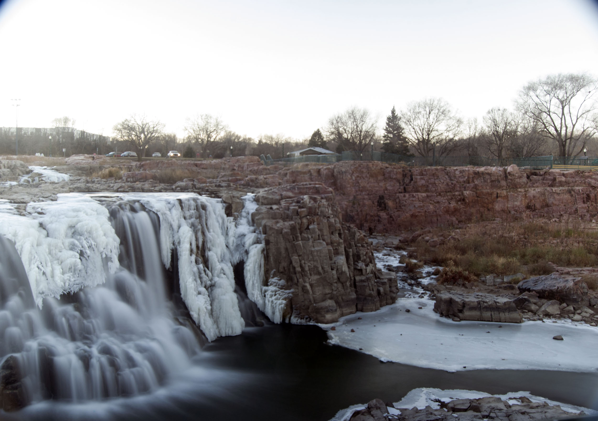
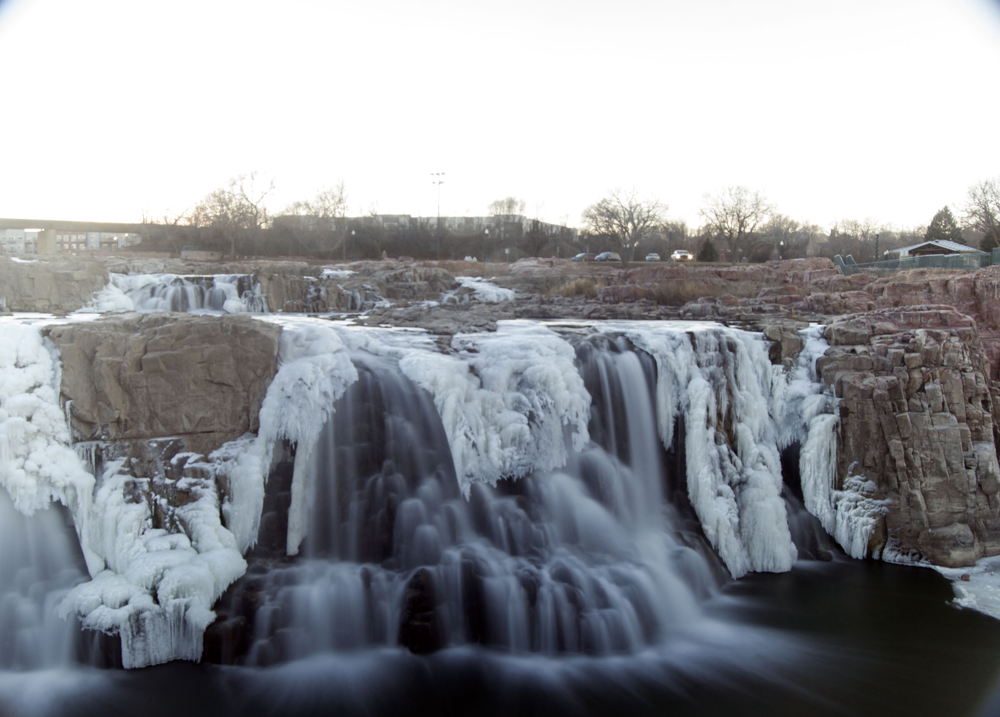
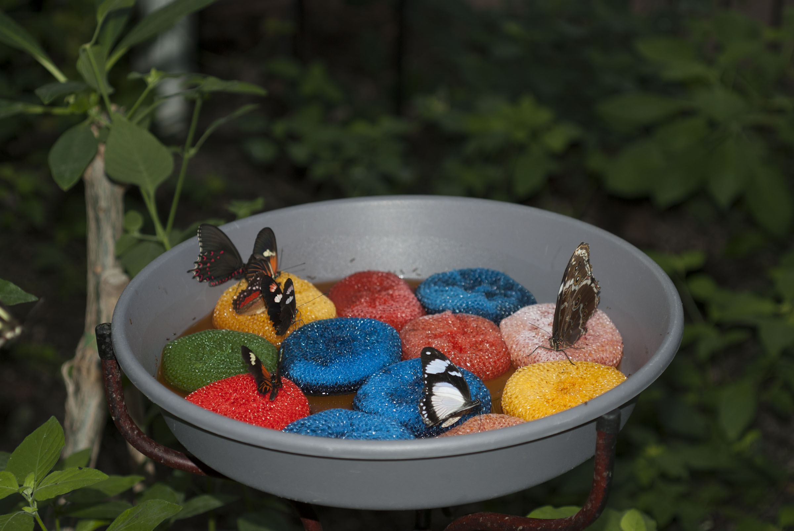

About
I am a civil engineer with a passion for photography. The images seen on this page are all creations by me. I am not particularly artistic, but I am trying to learn that part of the craft. Enjoy my gallery below!
Gallery
Sioux Falls Waterfall
 Sioux Falls Butterfly House
Camping in South Dakota


Jacksonville Beach